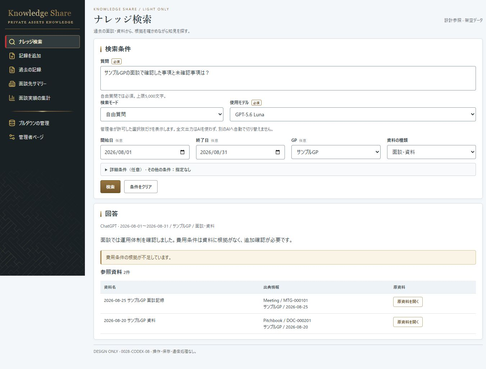
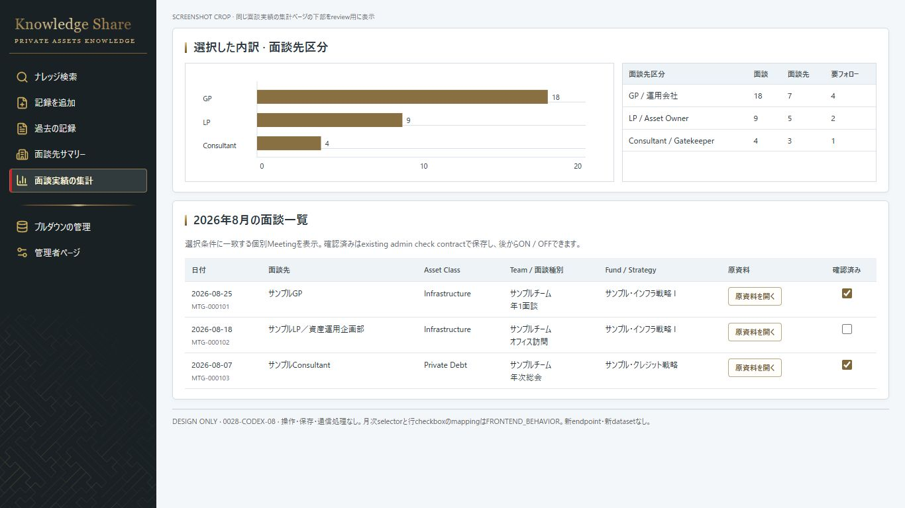
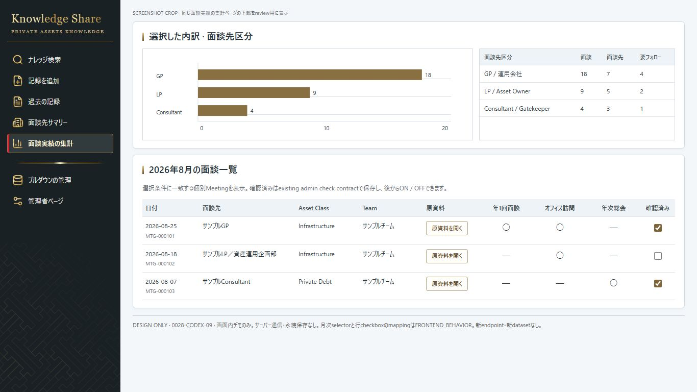

Sidebar / 同じナレッジ検索状態、原寸比較
PR #45

CODEX-09 · bright / rich / antique gold

両版ともCSS viewport 1366×768、deviceScaleFactor 1。full-page capture。内容の再配置とgold強調は承認済み変更。
PR #45

CODEX-09 · bright / rich / antique gold
PR #45 / 質問→実行方法→期間
CODEX-09 / 条件→実行方法→質問
PR #45

CODEX-09
